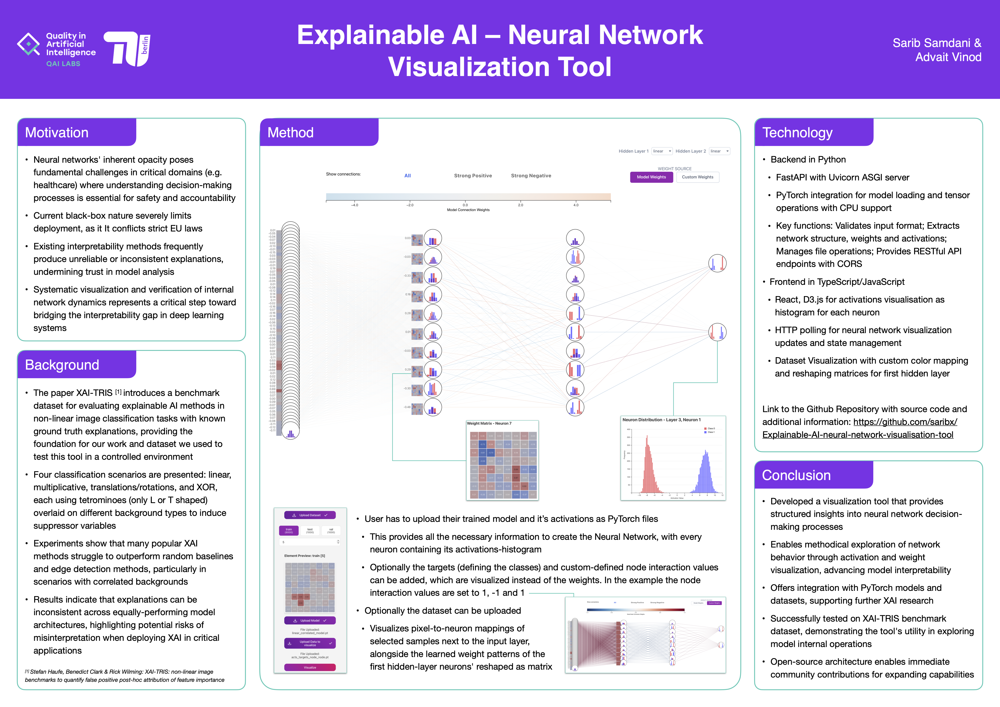

T-Systems (Deutsche Telekom)
Optibot is an open-source, containerized real-time visual perception system for robots that ingests WebRTC or video streams and outputs structured metadata such as detected objects, bounding boxes, and estimated distances, even from highly resource-constrained cameras.
Department of AI and Land Use Change at TUB
Implemented CNN models for automated plant disease detection. Involved thorough documentation, including evaluation metrics, data augmentation, and comparison of different image preprocessing techniques.
Quality in Artificial Intelligence Labs
Created a first-of-its-kind interactive platform for visualizing user-uploaded models to contribute to the field of Explainable AI; constructed histograms and edge activation mappings of neurons using PyTorch & D3.js; paper to be published later.
Centre for tangible artificial intelligence
Engineered an advanced grocery detection and management system with dynamic web interface and multiple camera installations; integrated OpenAI services to determine expiry date and generate recipe with inventory; incorporated self-developed voice assistant in Python.
Berlin Auf Die Eins (BAD1)
Hackathon winner: designed a taxpayer-funded, vote-driven startup investment platform for Berlin, enabling democratic capital allocation to early-stage founders; pitched to the mayor of Berlin and other politicians.
Google x Bliss
Won the Google x Bliss Hackathon by developing a real-time video-based assistant built with Flutter and the Gemini API, leveraging Retrieval-Augmented Generation to process and reference thousands of manuals — all developed within just 8 hours.
Big Berlin Hack
Designed for businesses to provide round-the-clock customer support, it helps teams save time by automating routine interactions such as booking appointments and answering questions. It’s also available on WhatsApp to handle chat support and send reminders.
Department of AI and Land Use Change at TUB
Transformer-based Multivariate Time Series Forecasting: Groundwater Level Prediction across distributed monitoring stations in Brandenburg, Germany
Designing Education Project Lab
Developed an AI tool for ai assisted assignment correction (spelling, grammar, tone) with a small team using Vercel; Organized a podcast with industry experts, pitched product to an live audience, and won the "Best Code" prize.
The code is Open Source and available on my GitHub: https://github.com/saribx/Explainable-AI-neural-network-visualisation-tool
